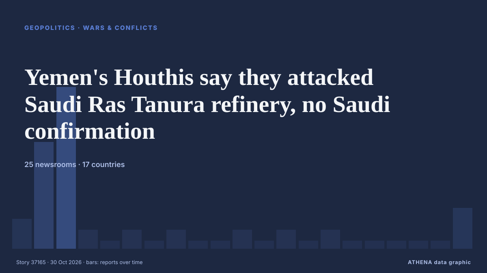

Yemen's Houthis say they attacked Saudi Ras Tanura refinery, no Saudi confirmation

Yemen's Houthis claimed attacks on three Saudi oil facilities and two international airports. из The Jerusalem Post
Независимые источники: 25 изданий в 17 странах, с 27 окт.; первым сообщил Oman Observer; освещение идёт на спад. ATHENA оценивает риск как повышенный (4.9/10), прежде всего из-за тяжести описываемого ущерба и географического и отраслевого охвата. Уверенность — 86 % (высокая); подтверждают независимые источники: 25 изданий, средняя надёжность источников — 78 %.
Почему это важно: Красное море и Баб-эль-Мандебский пролив — кратчайший морской путь между Азией и Европой через Суэцкий канал. Атаки на торговые суда вынуждают огибать Африку, что добавляет время и затраты мировой торговле.
Что изменилось: 4 новых сообщений от 4 редакций за 24 часа до 30 окт..
Первый заголовок: Yemen’s Houthis Say They Hit Saudi Ras Tanura Oil Refinery With Missile
Заголовки приводятся на английском языке, как они были опубликованы.
Коротко в цифрах
Отобрано, оценено и написано по опубликованной методологии ATHENA. Ни один редактор не вмешивается в отдельные события. Как это создаётся ›
| 27 Oct 07:33 UTC | 2 |
|---|---|
| 27 Oct 10:33 UTC | 9 |
| 27 Oct 13:33 UTC | 14 |
| 27 Oct 16:33 UTC | 1 |
| 27 Oct 19:33 UTC | 0 |
| 27 Oct 22:33 UTC | 1 |
| 28 Oct 01:33 UTC | 0 |
| 28 Oct 04:33 UTC | 1 |
| 28 Oct 07:33 UTC | 0 |
| 28 Oct 10:33 UTC | 0 |
| 28 Oct 13:33 UTC | 1 |
| 28 Oct 16:33 UTC | 0 |
| 28 Oct 19:33 UTC | 1 |
| 28 Oct 22:33 UTC | 0 |
| 29 Oct 01:33 UTC | 1 |
| 29 Oct 04:33 UTC | 0 |
| 29 Oct 07:33 UTC | 0 |
| 29 Oct 10:33 UTC | 0 |
| 29 Oct 13:33 UTC | 0 |
| 29 Oct 16:33 UTC | 0 |
| 29 Oct 19:33 UTC | 3 |
| 27 Oct 09:07 UTC | 1.2 |
|---|---|
| 27 Oct 11:46 UTC | 2.9 |
| 27 Oct 11:47 UTC | 5.0 |
| 27 Oct 12:45 UTC | 5.5 |
| 27 Oct 16:45 UTC | 6.4 |
| 27 Oct 16:49 UTC | 5.5 |
| 28 Oct 00:38 UTC | 4.8 |
| 30 Oct 07:53 UTC | 4.9 |
| 30 Oct 07:53 UTC | 4.9 |
Откуда эти цифры
Значимость
Риск
Уверенность
Освещение — кто сообщил и когда
заголовок в оригинале · открывает источник- Oman Observer · Оман · OmanAnsar Allah say they launched an attack on Saudi Ras Tanura oil refinery
- Türkiye Today · Турция · TurkeyOil prices rise as Saudi Ras Tanura hub catches fire after Houthi attack
- The Straits Times · Сингапур · SingaporeHouthis claim attack on Saudi Arabia’s biggest oil refinery; blasts shake Riyadh
- Business Recorder · Пакистан · PakistanYemen's Houthis say they launched an attack on Saudi Ras Tanura oil refinery
- Al-Monitor · Соединенные Штаты · United StatesYemen's Houthis say they hit Saudi Ras Tanura oil refinery with missile
- The Daily Star — page reader · Бангладеш · BangladeshHouthis say they launched an attack on Saudi Ras Tanura oil refinery
- OilPrice.com · Великобритания · United KingdomRas Tanura Fire Follows Attacks on Aramco Offices and Near Shaybah Field
- TASS (English) · Россия · RussiaHouthis claim ballistic missile attack on oil refinery in eastern Saudi Arabia
- The National · ОАЭ · United Arab EmiratesMiddle East latest: Saudi Arabia reports missile interception damage in Riyadh as Houthis claim more attacks
- Anadolu Agency (English) · Турция · TurkeyYemen’s Houthis claim missile attack on Saudi Arabia’s Ras Tanura oil refinery
- Xinhua (English) — page reader · Китай · ChinaSaudi-led coalition says intercepted missiles launched toward Riyadh; Houthis claim attack on Saudi oil refinery
- Middle East Eye · INTHouthis hit Saudi refinery as Iran warns of ‘devastating’ response to further US-Israeli attacks
- The New Arab · INTHouthis claim attack on Saudi oil refinery, blasts shake Riyadh
- NDTV · Индия · IndiaHouthis Claim Missile Strike On Saudi Oil Refinery As Blasts Shake Riyadh
- gCaptain · Соединенные Штаты · United StatesYemen’s Houthis Say They Hit Saudi Ras Tanura Oil Refinery With Missile
- Al-Monitor · Соединенные Штаты · United StatesSaudi oil infrastructure in crosshairs as Houthis claim Ras Tanura strike
- The Business Times · Сингапур · SingaporeYemen’s Houthis say they hit Saudi Ras Tanura oil refinery with missile
- Business Recorder · Пакистан · PakistanYemen's Houthis say targeted Saudi defence ministry in Riyadh
- Anadolu Agency (English) · Турция · TurkeyHouthis claim targeting 4 locations in Saudi Arabia with ballistic missiles, drone
- The Jerusalem Post · Израиль · IsraelHouthis claim to have hit Saudi Ras Tanura oil refinery, defense ministry with ballistic missiles
- NDTV · Индия · India"Direct Hit": Houthis Claim Targeted Saudi Ministry With Ballistic Missile
- Rigzone · Соединенные Штаты · United StatesAramco Contains Fire Near Ras Tanura Oil Hub
- Shafaq News (English) · Ирак · IraqHouthis claim attacks on Saudi defense ministry
- Türkiye Today · Турция · TurkeyHouthis say they fired missiles at Saudi defence ministry and Ras Tanura refinery
- Khaama Press · Афганистан · AfghanistanYemen’s Houthis Say They Hit Saudi Arabia’s Ras Tanura Oil Refinery
- Rappler · Филиппины · PhilippinesSaudi’s biggest oil refinery hit with missile, say Yemen’s Houthis
- APA (English) · Азербайджан · AzerbaijanNazaha President: Saudi Arabia will take all necessary measures against Houthis
- Business Recorder · Пакистан · PakistanGulf equities mixed as Ras Tanura strike unnerves investors
- The Rio Times · Бразилия · BrazilSaudi Refinery Claim Lifts Oil Near US$115
- CGTN (World) · Китай · ChinaSaudi-Houthi attacks continue as both sides report strikes
- Middle East Eye · INTHouthis claim six attacks on Saudi Arabia airports and oil facilities
- Xinhua (English) — page reader · Китай · ChinaYemen's Houthis claim attacks on Saudi oil, aviation, military targets
- The Jerusalem Post · Израиль · IsraelYemen's Houthis say they attacked Saudi Ras Tanura refinery, no Saudi confirmation